조선산업기사 (2009-05-10 기출문제)
1과목: 조선공학일반
1. 다음 ( ) 안에 들어갈 알맞은 말로 짝지어진 것은?
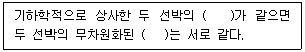
- 프루드수, 잉여저항계수
- 프루드수, 마찰저항계수
- 레이놀드수, 마찰저항계수
- 레이놀드수, 잉여저항계수
(정답률: 알수없음)

2. 경사시험으로부터 얻어지는 메타센터높이를 구하는 식으로 옳은 것은? (단, W : 이동방향, △ : 배수량, ø : 횡경사각, d : 선체중심선에서 이동한 중량물의 거리이다.)
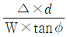
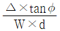
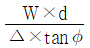
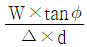
(정답률: 알수없음)
3. 선체의 하면으로부터 압축한 공기를 수면에 강하게 내뿜어서 쿠션을 만들어 그것으로 무게를 받치고 수면과 거의 같은 높이로 항주하는 형태의 선박은?
- 도선
- 수중익선
- 수중작업선
- 호버크래프트
(정답률: 알수없음)
4. 선박의 운동에서 배의 길이 방향의 축을 중심으로 회전 왕복 운동을 하는 것은?
- Rolling
- Yawing
- Pitching
- Surging
(정답률: 알수없음)
5. 프로펠러가 고속으로 회전하여 어느 한계를 넘으면 날개 뒷면의 압력이 낮아져 물이 날개에 따라 흐르지 못하고 날개면에 수증기나 거품이 발생하는 현상으로 이들이 터지면서 날개가 손상되기도 하고 진동과 소음 발생의 원인이 되기도 하는 것은?
- 반류(Wake)
- 슬립비(Slip ratio)
- 공동현상(Cavitation)
- 추력감소(Thrust deduction)
(정답률: 알수없음)
6. 구명정(Life boat)의 종류와 크기 및 탑재시킬 척수를 결정하는데 가장 관계가 먼 것은?
- 의장수
- 배의 항로
- 총톤수
- 승선인원
(정답률: 알수없음)
7. 다음 중 국명과 선급협회 약칭이 틀리게 짝지어진 것은?
- 한국 – KR
- 이탈리아 – RI
- 일본 – NK
- 중국 – CCR
(정답률: 알수없음)
8. 비중 0.5인 균일 물질의 직육면체 통나무가 담수 중에 떠 있다면 횡메타센터 높이는 약 몇 m 인가? (단, 통나무는 길이 10m, 폭 2m, 높이 1m 이다.)
- 0.283
- 0.417
- 8.083
- 16.417
(정답률: 알수없음)
9. 센터미터(cm)당 배수톤수를 설명한 것으로 가장 옳은 것은?
- 선박의 만재흘수선에서 1cm 의 흘수변화를 주기 위한 화물중량의 변화량
- 선박의 만재흘수선에서 1cm 의 흘수변화를 주기 위한 배수량의 변화량
- 선박의 어떤 수선면에서 1cm 의 흘수변화를 주기 위한 화물중량의 변화량
- 선박의 어떤 수선면에서 1cm 의 흘수변화를 주기 위한 배수량의 변화량
(정답률: 알수없음)
10. 선박의 기본 3대 특성이 아닌 것은?
- 부양성
- 복원성
- 이동성
- 적재성
(정답률: 알수없음)
11. 다음 중 닻과 체인을 연결할 때 체인이 꼬이는 것을 막기 위하여 사용되는 것은?
- 엔드링크(End link)
- 확대링크(Enlarged link)
- 보통링크(Common link)
- 스위볼링크(Swivel link)
(정답률: 알수없음)
12. 다음 중 건현에 대한 설명으로 옳은 것은?
- 갑판 beam 상면에서 형흘수까지의 거리
- 갑판 beam 상면에서 깊이의 0.55배까지의 거리
- 횡단면의 중앙에서 갑판하면으로부터 형흘수까지의 거리
- 선박의 중앙횡단면에서 갑판상면으로부터 만재흘수선까지의 수직거리
(정답률: 알수없음)
13. 선박의 조타장치는 전속력 항해 중 한쪽 현 35°에서 반대 현 30° 까지 몇 초 이내에 조타할 수 있어야 하는가?
- 18초
- 28초
- 48초
- 60초
(정답률: 알수없음)
14. 그림과 같은 선도의 면적을 계산하는 식으로 옳은 것은?
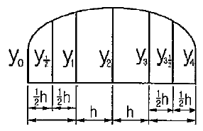
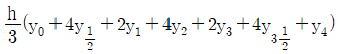
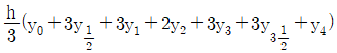
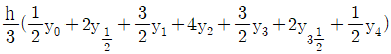
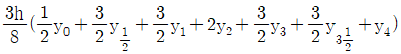
(정답률: 알수없음)
15. 선박이 진행하는 방향과 90°의 방향으로 입사하는 파도를 무엇이라 하는가?
- 횡파(Beam sea)
- 선수파(Head sea)
- 선수사파(Bow sea)
- 선미파(Following sea)
(정답률: 알수없음)
16. 동일 배수량을 유지하면서 배의 길이를 증가시켰을 때 변화에 대한 설명으로 틀린 것은?
- 방형계수의 값이 작아진다.
- 속도가 빨라지므로 속장비의 값이 커진다.
- 동일 해상에서 선체에 작용하는 최대굽힘모멘트가 증가된다.
- 동일 속력에 대한 저항이 적어지므로, 소요마력이 적게 든다.
(정답률: 알수없음)
17. 다음 중 일반배치도에 나타나지 않는 것은?
- 외판 치수
- 거주구 배치
- 탱크 위치 명칭
- 계선계류 장치
(정답률: 알수없음)
18. 선박 추진기관의 동력이 프로펠러에 전달되는 과정에서 각 단계별로 정의되는 다음의 동력 중 가장 큰 것은?
- 축마력
- 전달마력
- 유효마력
- 지시마력
(정답률: 알수없음)
19. 길이 10m, 폭 2m, 깊이 1m의 직육면체 바지(barge)가 흘수 0.5m의 수평 상태로 떠 있다. 중앙부 길이 2m의 구획이 침수한 후의 흘수는 몇 m 인가?
- 0.625
- 0.620
- 0.610
- 0.600
(정답률: 알수없음)
20. 만재상태 배수량이 150000ton이고, 재화중량이 120000ton 이라면 경하중량은 몇 ton 인가?
- 15000
- 30000
- 60000
- 270000
(정답률: 알수없음)
2과목: 조선유체역학 및 재료역학
21. 단면(폭×높이)이 5cm×10cm, 길이 3m의 외팔보에 균일 분포하중 ω가 작용하여 50MPa의 최대 굽힘응력이 생겼다면 최대 전단응력은 약 몇 MPa 인가?
- 0.65
- 0.75
- 0.83
- 0.93
(정답률: 알수없음)
22. 원형 단면축이 비틀림 모멘트를 받을 때 생기는 비틀림각에 대한 설명 중 틀린 것은?
- 비틀림모멘트에 비례한다.
- 전단 탄성계수에 반비례한다.
- 극단면 2차 모멘트에 비례한다.
- 축 지름의 네제곱에 반비례한다.
(정답률: 알수없음)
23. 지름 d인 원형 단면의 회전반지름은?
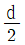
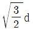
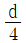
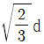
(정답률: 알수없음)
24. 그림과 같은 2단봉에서 A단에서의 응력이 σA = 20MPa 이라면 B단에 생기는 응력은 몇 MPa 인가? (단, P = 20kN 이다.)
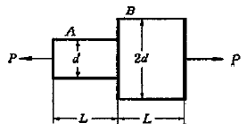
- 4
- 5
- 8
- 10
(정답률: 알수없음)
25. 그림과 같은 외팔보 (a), (b)에서 최대 굽힘모멘트의 비 MA/MB의 값은 얼마인가?
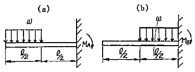
- 6
- 5
- 4
- 3
(정답률: 알수없음)
26. 2축 평면 응력상태에서 σx = σy 일 때 이 응력상태에 대한 Mohr 원의 반지름은?
- 0
- 1/2 σx
- σx
- 2σx
(정답률: 알수없음)
27. 그림과 같은 평면 응력상태에서 최대 전단응력(τmax)과 최대 수직응력(σmax)은 각각 몇 MPa 인가?
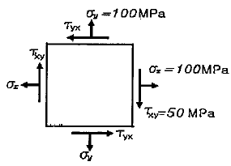
- τmax = 100, σmax = 150
- τmax = 50, σmax = 150
- τmax = 50, σmax = 100
- τmax = 25, σmax = 100
(정답률: 알수없음)
28. 보가 하중을 받고 있을 때 보에 발생하는 전단응력에 대한 설명 중 틀린 것은?
- 단면 2차 모멘트에 반비례한다.
- 중립축에서는 전단응력이 발생하지 않는다.
- 원형 단면의 보에 발생하는 최대 전단응력은 평균 전단응력의 4/3 배이다.
- 사각형 단면의 보에 발생하는 최대 전단응력은 평균 전단응력의 3/2 배이다.
(정답률: 알수없음)
29. 안지름 20cm, 두께 0.5cm의 연강제 원통에 압력 2MPa의 가스를 담았다. 축방향 응력(σx)과 원주방향 응력(σy)은 각각 몇 MPa 인가?
- σx = 10, σy = 20
- σx = 20, σy = 40
- σx = 30, σy = 60
- σx = 40, σy = 80
(정답률: 알수없음)
30. 그림과 같은 단순 지지보에서 각 지점에서 반력의 크기는 몇 kN 인가?
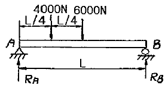
- RA= 7, RB= 3
- RA= 3, RB= 7
- RA= 4, RB= 6
- RA= 6, RB= 4
(정답률: 알수없음)
31. 골프공의 표면을 매끈하지 않고 움푹 들어간 형상(Dimple)을 한 이유로 옳은 것은?
- 항력을 작게 하여 빠른 속도를 주기 위하여
- 타격되는 면적을 넓혀 멀리 날아가게 하기 위하여
- 골프공에 회전을 쉽게 하여 조정성을 높이기 위하여
- 잔디 위에서 저항을 주어 구르지 않도록 하기 위하여
(정답률: 알수없음)
32. 다음 중 점성유동과 관계되는 무차원 수는?
- 마하(Mach)수
- 프루드(Froude)수
- 오일러(Euler)수
- 레이놀드(Reynolds)수
(정답률: 알수없음)
33. 그림과 같이 고정날개에 비중이 2인 액체의 분류(Jet)가 50m/s로 노즐로부터 나오고 있다. 분류의 직경이 5cm 라면 이 날개를 고정시키는데 필요한 힘 Fx는 약 몇 N 인가?
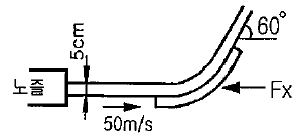
- 1310
- 2450
- 4900
- 8500
(정답률: 알수없음)
34. 그림과 같이 단면적이 변하는 수평관에 물이 흐르고 있다. 단면 1, 2에서의 단면적이 A1, A2이고, 평균압력이 각각 P1, P2 이다. 이 관을 통해 흐르는 물의 체적유량을 옳게 나타낸 식은? (단, 마찰손실을 무시하고 1차원 유동으로 가정한다.)
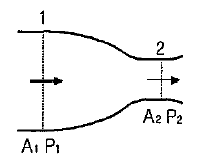
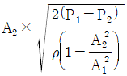
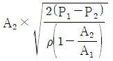
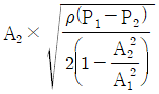
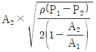
(정답률: 알수없음)
35. 단면이 그림과 같고 폭이 1m인 물탱크에 물이 들어 있다. 이 때 바닥면에 작용하는 힘은 약 몇 kN 인가? (단, 물의 밀도는 1000 kg/m3 이다.)
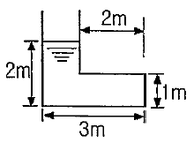
- 58.8
- 117.6
- 4900
- 9800
(정답률: 알수없음)
36. 차원이 같은 물리량으로 짝지어진 것은?
- 힘 – 운동량
- 일 – 에너지
- 충격량 – 압력
- 동력 – 응력
(정답률: 알수없음)
37. 기름의 동점성계수가 1.5 Stokes이고, 비중량이 0.00085 kgf/cm3 이라면 이 기름의 점성계수는 약 몇 kgf·s/m2 인가?
- 1.3
- 0.13
- 0.013
- 0.0013
(정답률: 알수없음)
38. 다음 중 정상류에 대한 설명으로 옳은 것은?
- 모든 점에서 유체의 상태가 시간에 따라 불규칙하게 변한다.
- 일정한 간격의 점에서 유체의 상태가 시간에 따라 일정한 변화를 한다.
- 모든 점에서 유체의 상태가 시간에 따라 일정한 비율로 변한다.
- 모든 점에서 유체의 상태가 시간에 따라 변하지 않는다.
(정답률: 알수없음)
39. 공기 중에서의 물체 무게는 490N이고, 물속에서의 무게는 98N이었다면 이 물체의 체적은 몇 m3 인가? (단, 물의 밀도는 1000 kg/m3 이다.)
- 0.01
- 0.04
- 0.⑤
- 0.06
(정답률: 알수없음)
40. 50cm 깊이로 채우전 물통이 엘리베이터에 실려 있다. 엘리베이터가 위로 2m/s2 의 가속도로 가속 중일 때 물통 바닥에 작용하는 수압은 약 몇 kPa 인가? (단, 물의 밀도는 1000 kg/m3 이다.)
- 3.9
- 4.8
- 5.9
- 7.0
(정답률: 알수없음)
3과목: 선체구조학
41. 선체가 횡방향에서 파랑을 받거나 롤링(Rolling)을 할 때 좌우 선측의 흘수차가 생겨 한쪽 현이 큰 압력을 받아 선체 변형이 일어나는 현상을 무엇이라 하는가?
- 팬팅(Panting)
- 슬래밍(Slamming)
- 래킹(Racking)
- 트위스팅(Twisting)
(정답률: 알수없음)
42. 선체의 중앙부에 최대굽힘모멘트가 걸릴 때 일반적으로 최대전단력이 작용하는 위치는? (단, L은 선체의 길이이다.)
- 선수부
- 선루부
- 선미부
- 선체 전후의 L/4 위치
(정답률: 알수없음)
43. 선체 구조도 중 외판전개도를 통해 알 수 없는 것은?
- 외판의 두께와 접합 방법
- 갑판부재의 배치 및 구조
- 선외개구부(船外開口部)의 위치 및 치수
- 격벽이나 각종 종통재의 외판결함
(정답률: 알수없음)
44. 다음 중 표준 횡늑골의 표준 간격을 정하는 식은? (단, L은 선체의 길이이다.)
- 2L + 450
- 2L + 550
- 2L – 450
- 2L – 550
(정답률: 알수없음)
45. 판 구조물의 응력집중(Stressconcentration)에 관한 설명으로 틀린 것은?
- 일반적으로 응력이 걸린 구조물에 어떤 불연속점에서 국부적인 응력집중이 일어난다.
- 사각형 구멍인 경우 응력집중계수는 그 구멍의 크기와 그 모퉁이의 반경에 지배된다.
- 구조물 내에 구멍이 있으면 그 구멍 주위에 응력 집중이 일어난다.
- 구조물 내의 구멍에 대한 응력집중계수는 부재의 폭에 대한 구멍 지름의 비가 증가함에 따라 증가하고, 구멍의 모서리가 날카로울수록 커진다.
(정답률: 알수없음)
46. 강선(鋼船)에서 선박의 나비(breadth)에 대한 설명으로 옳은 것은?
- 상갑판의 위치에서 우현 선측외판의 바깥면과 좌현 선측외판의 바깥면 사이의 거리
- 상갑판의 위치에서 한쪽 현 선측외판의 바깥면과 다른 쪽 현 선측외판의 내면 사이의 거리
- 선체의 최광부에서 우현 선측외판의 중심면과 좌현 선측외판의 중심면 사이의 거리
- 선체의 최광부에서 우현 선측외판의 내면과 좌현 선측외판의 내면 사이의 거리
(정답률: 알수없음)
47. 다음 중 타심재와 키판을 연결하는 역할을 하는 리더의 구조 부재는?
- 러더 암(Rudder arm)
- 최하 거전(Heel gudgeon)
- 러더 핀틀(Rudder pintle)
- 로킹 핀틀(Locking pintle)
(정답률: 알수없음)
48. 산적화물선에서 짐이 허물어지는 일을 없애기 위하여 화물창의 어깨부분을 경사판으로 막고 그 구석을 탱크로 이용하는데 이 탱크를 무엇이라 하는가?
- 호퍼 탱크(Hopper tank)
- 톱 사이드 탱크(Top side tank)
- 사이드 윙 탱크(Side wing tank)
- 이중저 탱크(Double bottom tank)
(정답률: 알수없음)
49. 다음 중 선체의 횡강도 부재에 속하지 않는 것은?
- 늑판
- 창내늑골
- 갑판
- 중심선거더
(정답률: 알수없음)
50. 선체 부재에 가해지는 굽힘응력(σ)과 굽힘모멘트(M) 사이의 관계식으로 옳은 것은? (단, Z는 단면계수이다.)
- σ = M/Z
- σ = Z/M
- σ = M · Z
- σ = M2 · Z
(정답률: 알수없음)
51. 방현재(Fender)를 설치하는 주된 목적은?
- 슬래밍에 의한 선수부의 충격을 완화시키기 위하여
- 선측후판과 더불어 중요한 종강도를 높이기 위하여
- 계류시 안벽과의 접촉에 의한 충격완화 및 마찰충격으로부터 보호하기 위하여
- 만재흘수선의 기준이 되는 상갑판선을 표시하기 위하여
(정답률: 알수없음)
52. 수밀격벽의 강도가 선저부로 갈수록 강해야 하는 주된 이유로 옳은 것은?
- 선저부의 중량이 더욱 크기 때문
- 선저부의 구조가 더욱 복잡하기 때문
- 선저부로 갈수록 받는 수압이 크기 때문
- 선저부로 갈수록 받는 부력이 크기 때문
(정답률: 알수없음)
53. 다음 중 국부강도를 증가시키기 위한 것이 아닌 것은?
- 선루의 신축 연결
- 만곡부 용골(Bilge keel)
- 보강보(Panting beam)
- 창구 코밍(Hatch coaming)
(정답률: 알수없음)
54. 다음 중 강력갑판으로 간주할 수 없는 것은? (단, L은 선체의 길이이다.)
- 상갑판
- 선수로 갑판
- 저선미루 갑판
- 0.15L 이상의 선교류 갑판
(정답률: 알수없음)
55. 길이가 100m인 중형화물선의 만재배수량이 12000ton 일 때 최대굽힘모멘트는 몇 ton·m 인가? (단, 호깅상태에서의 상수값 C는 32 이다.)
- 12000
- 37500
- 120000
- 384000
(정답률: 알수없음)
56. 다음 중 2중저(Double bottom) 구조를 구성하는 부재가 아닌 것은?
- 특설늑골(Web frame)
- 실체늑판(Solid floor)
- 중심선거더(Center girder)
- 내저판(Inner bottom plating)
(정답률: 알수없음)
57. 다음 중 연료유 탱크와 윤활유 탱크 사이 및 이들과 청수 탱크 사이에 유밀을 위한 구획을 무엇이라 하는가?
- 코퍼댐(Cofferdam)
- 화염판(Rlame plate)
- 대빙방현재(Ice fender)
- 독립형탱크(Indeoendent tank)
(정답률: 알수없음)
58. 다음 중 선수 및 선미부에서 모두 사용되는 부재가 아닌 것은?
- 리브(Rib)
- 제수판(Wash plate)
- 패션판(Fashion plate)
- 팬팅비임(Panting beam)
(정답률: 알수없음)
59. 강판 선수재에 설치되는 수평리브의 간격은 몇 mm 이하로 하여야 하는가?
- 450
- 550
- 1000
- 1200
(정답률: 알수없음)
60. 격벽판을 가로 또는 세로 방향으로 연속적으로 굴곡시켜 강도를 보강한 형태의 격벽으로, 별도의 보강재를 설치하지 않아도 강도효과를 갖는 격벽은?
- 수밀격벽
- 충돌격벽
- 파형격벽
- 제수격벽
(정답률: 알수없음)
4과목: 선박건조학 및 선박동력장치
61. 진수 계산시 초기 시동력을 구하는 식으로 옳은 것은? (단, W : 충진수중량, μ : 마찰계수, θ : 활주대 밑의 고정대 평균경사각이다.)
- W cosθ(tanθ - μ)
- W sinθ(tanθ - μ)
- W tanθ(sinθ - μ)
- W tanθ(cosθ - μ)
(정답률: 알수없음)
62. 강판의 가스절단 작업시 활용되는 변형방지법이 아닌 것은?
- 구속법
- 수냉각법
- 선상가열법
- 브리지(Bridge)법
(정답률: 알수없음)
63. 다음 중 건조 선거에서 주로 사용되는 문형 크레인은?
- 지브 크레인(Jib crane)
- 타워 크레인(Tower crane)
- 골리앗 크레인(Goliath crane)
- 로커모티브 크레인(Locomotive crane)
(정답률: 알수없음)
64. 다음 중 공장배치시 고려사항으로 틀린 것은?
- 중량물의 운반경로는 최소화한다.
- 부재는 일직선의 흐름을 피하고 상호 교차되는 것이 바람직하다.
- 완충지역(Buffer area)을 설치하여 공정간의 능력 균형을 도모한다.
- 장래의 방침에 따라 변화에 대응할 수 있는 여지를 남겨 둔다.
(정답률: 알수없음)
65. 가공 공사에서 강판의 변형이 제거된 바로 다음의 일반적인 공정은?
- 굽힘
- 마킹
- 절단
- 펀칭
(정답률: 알수없음)
66. 지상 조립을 완료한 블록의 탑재 후 행해져야 할 공사는?
- 선형 결정짓기
- 블록의 보강
- 선행 발판 가설
- 선행의장 및 도장
(정답률: 알수없음)
67. 다음과 같이 용접방향과 용착방향이 반대인 용착법은?
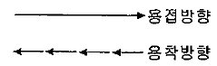
- 전진법
- 대칭법
- 비석법
- 후퇴법
(정답률: 알수없음)
68. 선대 공사 중에 이루어져야 할 작업이 아닌 것은?
- 흘수표검사
- 수밀시험
- 탱크 내부검사
- 경사시험
(정답률: 알수없음)
69. 선대공사에서 블록결합도에 기재할 필요가 없는 것은?
- 도장재료
- 용접기호
- 절단여유의 유무
- 스트롱 백의 종류 및 사용법
(정답률: 알수없음)
70. 공사용 선체 선도 상에서 랜딩(Langing)에 대한 설명으로 가장 옳은 것은?
- 형뜨기 작업을 하는 것
- 늑골선의 위치를 결정하는 것
- 외판의 심(Seam) 위치를 결정하는 것
- 외판의 버트(Butt) 위치를 결정하는 것
(정답률: 알수없음)
71. 가변피치 프로펠러(C.P.P)에 대한 설명으로 틀린 것은?
- 프로펠러 날개의 각도를 조정하여 피치를 조정할 수 있다.
- 후진할 경우에도 프로펠러의 회전방향을 전진할 때와 동일하다.
- 주기관을 정속도로 유지하면서 출력을 조정할 수 있어 기관운전에 이점이 있다.
- 타(Rudder)를 별도로 장치할 필요가 없어 선박의 조정 성능이 우수하다.
(정답률: 알수없음)
72. 가스터빈의 주요 구성 부분이 아닌 것은?
- 터빈
- 압축기
- 연소기
- 응축기
(정답률: 알수없음)
73. 두 축을 연결하는 축 이음 요소로 사용되는 마찰 클러치의 형식이 아닌 것은?
- 원판식
- 원추식
- 원주식
- 원심식
(정답률: 알수없음)
74. 프로펠러를 정반 위에 수평으로 놓고 날개를 18° 회전시키면서 피치 계측기로 측정한 시작점과 끝점의 깊이 차이가 10cm 일 경우 이 프로펠러의 피치는 몇 cm 인가? (단, 프로펠러는 균일 피치 프로펠러이다.)
- 50
- 100
- 200
- 300
(정답률: 알수없음)
75. 4사이클 기관과 비교할 때 2사이클 기관의 장점이 아닌 것은?
- 토크 변화가 적고, 운전이 원활하다.
- 환기 작용이 완전하여 고속기관에 적합하다.
- 마력당 부피가 작고, 플라이월이 작아도 된다.
- 구조가 간단하고, 마력당 기관의 중량이 작다.
(정답률: 알수없음)
76. 선미관에 설치되는 리그넘바이트(Lignumvitae)의 역할이 아닌 것은?
- 축의 부식방지
- 선미부의 수밀
- 프로펠러의 추력 전달
- 선미관 내면과의 마찰감소
(정답률: 알수없음)
77. 다음 중 고속 디젤기관의 기본 사이클로서 열공급이 정적 및 정압의 두 부분에서 이루어지므로 정적-정압사이클이라고도 하는 사이클은?
- 오토(Otto) 사이클
- 디젤(Diesel) 사이클
- 사바테(Sabathe) 사이클
- 브레이튼(Brayton) 사이클
(정답률: 알수없음)
78. 일반적인 디젤기관과 가솔린기관의 특징을 비교한 것 중 틀린 것은?
- 디젤기관은 가솔린기관에 비하여 압축비가 낮다.
- 가솔린기관은 디젤기관에 비하여 연료소비율이 높고 경제성이 낮다.
- 가솔린기관은 시동이 용이하고 진동이 적다.
- 디젤기관의 연료는 경우 또는 중유를 사용한다.
(정답률: 알수없음)
79. 다음 중 디젤기관에서 과급기(Super-charger)의 역할로 틀린 것은?
- 출력을 증가시킬 수 있다.
- 연료 공급을 적게할 수 있다.
- 흡입공기의 압력을 높일 수 있다.
- 실린더에 공기 흡입량을 증가시킬 수 있다.
(정답률: 알수없음)
80. 다음 중 가스터빈 기관의 성능을 향상시키는 방법이 아닌 것은?
- 압축기 입구 온도를 높이는 방법
- 압축기의 성능을 높이는 방법
- 터빈의 입구온도를 높이는 방법
- 터빈의 성능을 높이는 방법
(정답률: 알수없음)
그리고 이 그림에서는 레이놀드수와 함께 프루드수와 잉여저항계수도 함께 나타나 있습니다. 프루드수는 유체의 질량과 관성력에 따라 유체의 움직임이 어떻게 변하는지를 나타내는 수치이며, 잉여저항계수는 유체의 점성에 따라 유체의 움직임이 어떻게 변하는지를 나타내는 수치입니다.
따라서 이 그림에서는 레이놀드수와 함께 유체의 움직임에 영향을 미치는 두 가지 수치인 프루드수와 잉여저항계수가 함께 나타나 있기 때문에 정답은 "프루드수, 잉여저항계수"입니다.